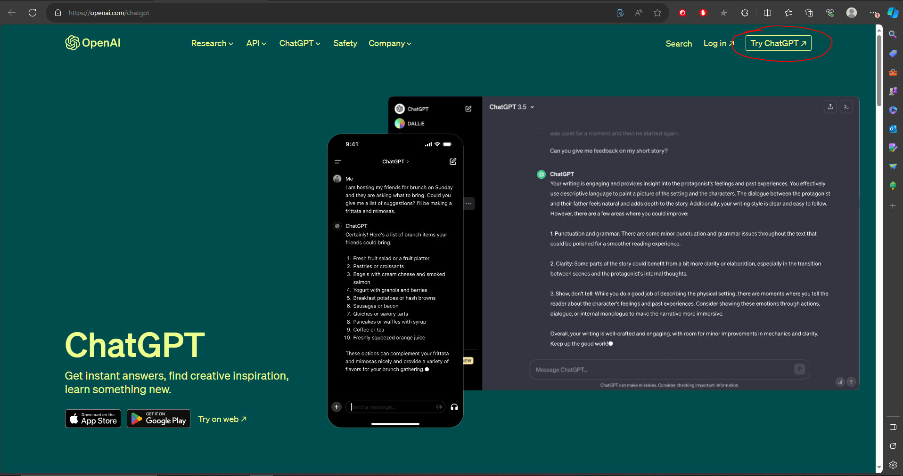
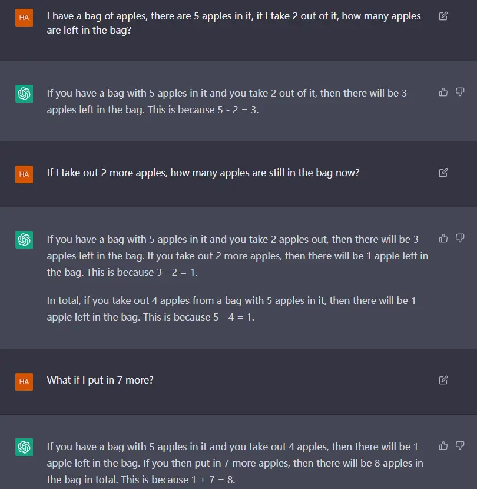

ChatGPT
On November 30, 2022 artificial intelligence lab OpenAI released ChatGPT, an AI chatbot that captured attention and interest of people all over the world. After only two months of its launch it reached 100 million users making it the fastest growing app in history. GPT-1 was the first model of the GPT (generative pre-trained transformer) series back in June 2018. This set the foundation as it demonstrated the power of unsupervised learning in language understanding task. GPT-2 was later released in Febuary of 2019 showing an upgrade and dramatic improvement in text generation capabilities. Due to the possibilities of misuse it was decided to not be released to the public. Later that year they did a staged rollout to study and limit potential risk. In June of 2020 another huge leap was made with GPT-3. This model was trained on 175 billion parameters and had advanced text generation capabilities such as drafting emails, writing papers and even generating programming code. ChatGPT works with GPT-3.5 which is a version of GPT-3. The latest model availible is GPT-4 but it is not free costing $20 a month. Some of the biggest features of this model are increased factual accuracy, better ability to follow user intention and even the ability to search the internet in real time.
ChatGPT is powered by a deep neural network which are inspired by the structure of the brain. The underlying technology involves training models with billions of parameters, which are then fine tuned for specific applications. The learning process involves adjusting these parameters based on the patterns observed in the training data. This allows ChatGPT to generate relevant responses to a wide range of user inputs. The capability of ChatGPT to understand and generate human like text across diverse topics is a result of the model's exposure to a broad spectrum of language during training. It is important to remember that ChatGPT is a tool that reflects and extends on information from its training so it does not have consciousness or awareness. This technology is a huge milestone in naturak language processing. The limits are endless if we continue to develop and research this technology.
When using ChatGPT there are risk that the user has to consider. Uploading private data can hand over sensitive information that can then be accesed by someone later on. There are also the risk of security breaches so if you upload a companys information for a question that could be leaked in a data breach causing problems for the company. Some responses might also have biases in them without you realizing it leading you in a direction you dont want to go. While they do try to handle ethics it can be hard so you might also get some unethical responses and get information you shouldnt have.
If you want to use ChatGPT yourself, you can head over to https://openai.com/chatgpt
Once there in the top right corner selecet the box that says Try ChatGPT
Once selected you will be prompted to login or create an account if you do not have one
Once you have signed in or created your account you will see the screen below
In the text box you type whatever you want and a response will be generated for you like the example below
